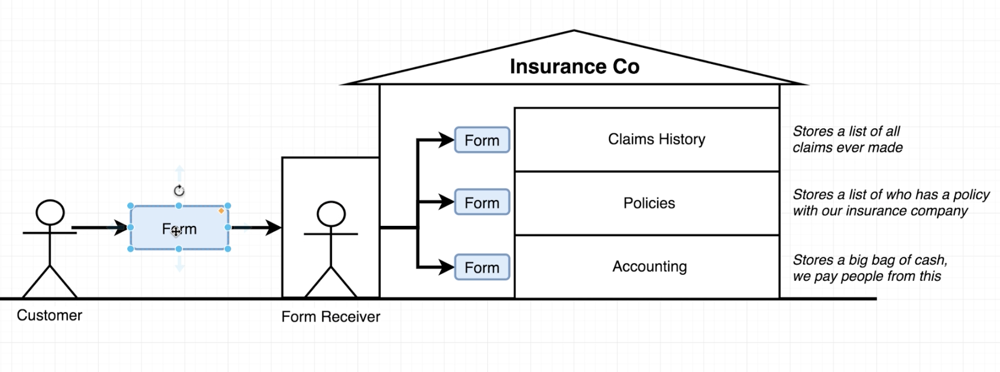
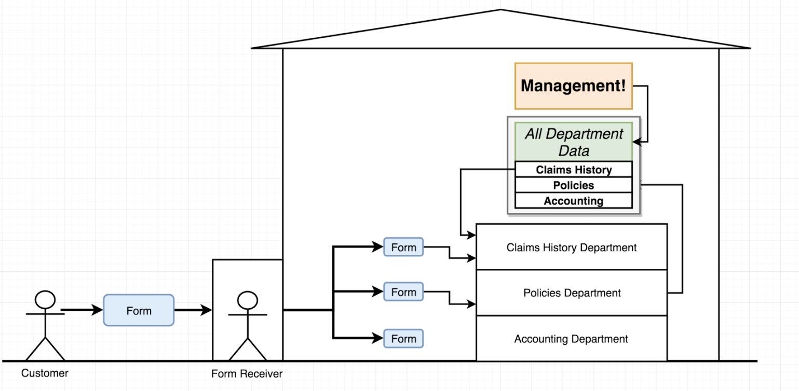
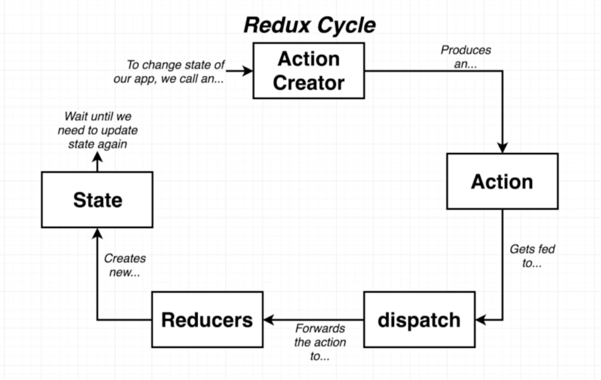

class: center, middle # Redux --- ## Basics #### What is Redux ? * State management library * Makes creating complex applications easier * Not required to create a React app! * Not explicitly designed to work with React! * This idea was first pioneered by React, but has since become a mainstay in frontend code --- ## What problem does Redux solve? * Modern frontend code has two big challenges that, when combined, makes frontend code extremely hard to write - mutation and asynchronicity * React solves part of this problem - it reduces asynchronicity and direct DOM manipulation in applications * But, it does not solve the problem of state management, which still has asynchronicity (API calls) and mutation (state updates) * Redux is a predictable state container for JavaScript apps! --- ### Analogy ( without redux )  --- ### Analogy ( with redux )  --- ## Steps we will cover next: #### Rexux's Three Fundamental Principles * Single source of truth * State is read-only * Changes are made with pure functions #### Rexux Core Concepts * Actions * Action creators * Reducers * combineReducers * Store #### As an exercise * We will implement analogy example with pure redux * Then if time left we will do simple counter with react-redux * For that prepare codepen or any other editor of your choice --- ## Principles 1 #### Single source of truth * The state of the whole application is stored in a single object ```jsx store store.getState() ``` --- ## Principles 2 #### State is read only * **NOTE**: This is not directly enforced by Redux, but can be enforced through libraries such as Immutable.js * The only way to change the state is to *dispatch* an *action* that describes the intended change to the state * Actions are plain objects with a `type` key and additional information, so they can be logged, stored, replayed, and tested in isolation ```jsx store.dispatch({ // The action that we want to do type: 'UPDATE_TODO' // Additional information about the action index: 1, value: 'Hello World!', }) ``` --- ## Principles 3 #### Updates to the state are done with pure functions * **NOTE**: Again, this is not directly enforced by Redux * *Reducers* are pure functions that take the previous state and an action, and returns the next state * **IMPORTANT**: When writing reducers, it is important to return new state objects instead of mutating the old ones * Since reducers are just (pure) functions, they can be composed and abstracted like regular functions ```jsx const initialState = { todos: [] }; const reducer = (state = initialState, action) => { switch(action.type) { case 'UPDATE_TODO': return { ...state, todos: [ ...state.slice(0, action.index), action.value, ...state.slice(action.index + 1) ], }; default: return state; } }; ``` --- ## Core Concepts <img src="../assets/img/react/core-redux.png" width="90%" style="margin-left: -2em"> ---  --- ### Actions * Plain JS objects that *describe* the intended updates to the state * Must have a `type` property that indicates the type of the action being performed * Outside of `type`, the structure of an action is up to the programmer (be reasonable) * Actions should typically be described as string constants ```jsx const UPDATE_TODO = 'UPDATE_TODO'; const updateTodoAction = { type: UPDATE_TODO, value: 'Grocery', }; ``` --- #### Action Creators * Functions that create actions * They simply return an action: ```jsx const updateTodo = (value) => ({ type: UPDATE_TODO, value, }); * The you initiate a dispatch, pass the result to the dispatch() function: dispatch(updateTodo(value)) ``` --- ### Reducers * Reducers specify how the application's state changes in response to actions sent to the store. * Make sure reducers are pure! Reducers should **never** mutate its arguments, perform side effects, or call non-pure functions ### Handling Actions ```jsx (previousState, action) => nextState ``` ```jsx const initialState = { todos: [] }; function todoApp(state = initialState, action) { switch (action.type) { case UPDATE_TODO: return todos.filter(t => t.id) default: return state } } ``` --- #### Splitting Actions (combineReducers) * Having a single reducer for the whole application quickly becomes unmanagable * Ideally, we would like to split our reducers into units that handle related state in our application, and ignores actions that has nothing to do with the state that it manages * Redux provides a utility called `combineReducers()` that helps us to combine all our reducers: ```jsx import { combineReducers } from 'redux'; const rootReducer = combineReducers({ todoItems: todoItemsReducer, todoUI: todoUIReducer, }); // is equivalent to const rootReducer = (state = {}, action) => ({ todoItems: todoItemsReducer(state.todoItems, action), todoUI: todoUIReducer(state.todoUI, action), }); ``` * All combineReducers() does is generate a function that calls your reducers with the slices of state selected according to their keys, and combines their results into a single object again. It's not magic. --- ### Store * Brings all reducers and actions together * You'll only have a single store in a Redux application. * The store has the following responsibilities: * Holds application state * Allows access to state via getState(); * Registers listeners via subscribe(listener); * Handles unregistering of listeners via the function returned by subscribe(listener). * To create a store you call createStore() and pass all your reducers to it. ```jsx import { createStore } from 'redux' import todoApp from './reducers' const store = createStore(todoApp) ``` * Returns the current state tree of your application. It is equal to the last value returned by the store's reducer. ```jsx store.getState() ``` * Allows state to be updated via `dispatch` *This is the only way to trigger a state change. ```jsx store.dispatch(action) ``` --- ### Subscrie/Unsubscribe * We **won't** cover it because official documentation says: * It is a low-level API. Most likely, instead of using it directly, you'll use React (or other) bindings. (example connect() in react-redux) * It's totally possible to use Redux with other frameworks or even just plain Javascript applications. In these cases, there needs to be a lower level mechanism for subscribing to changes in state. * We don't need in our case because we use connect() --- ## Things We Did Not Cover * How to do asynchronous actions in Redux * Subscrie/Unsubscribe * Redux Selectors * Advanced Redux concepts * "Higher-order reducers" * Middleware * How to test Redux code --- ## References * https://redux.js.org * https://egghead.io/courses/getting-started-with-redux --- class: center, middle # Questions?